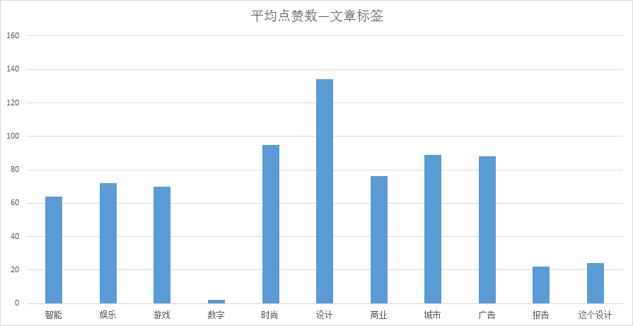
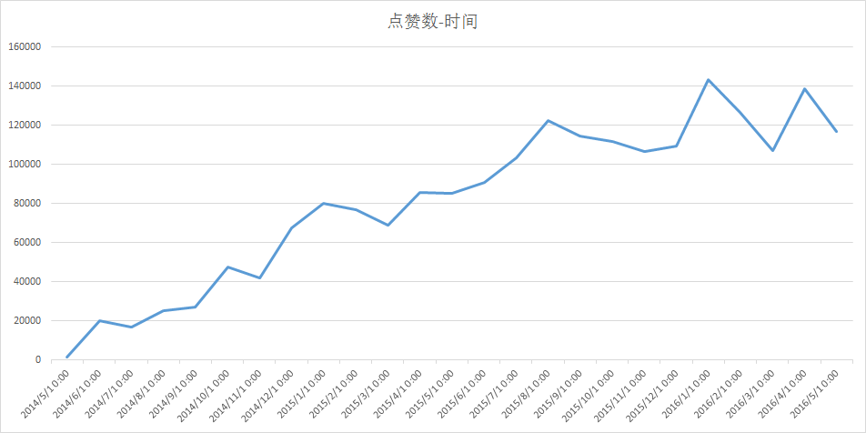
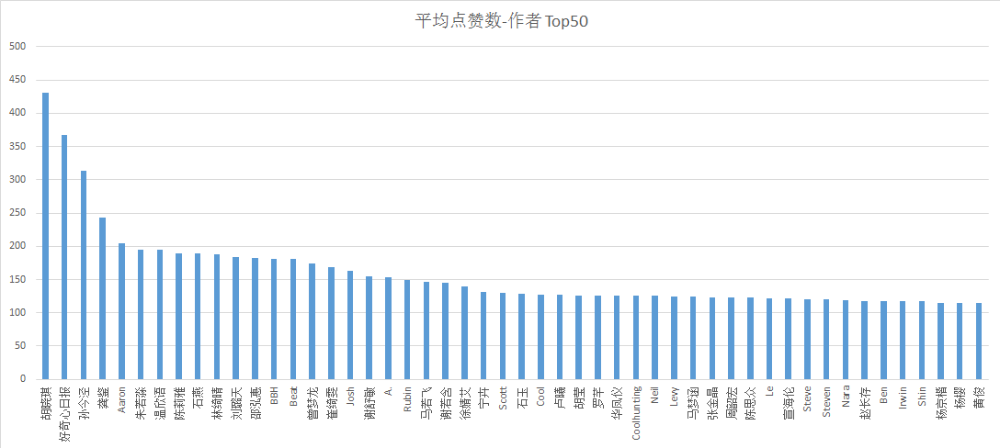
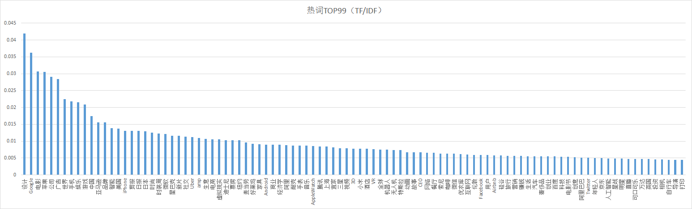
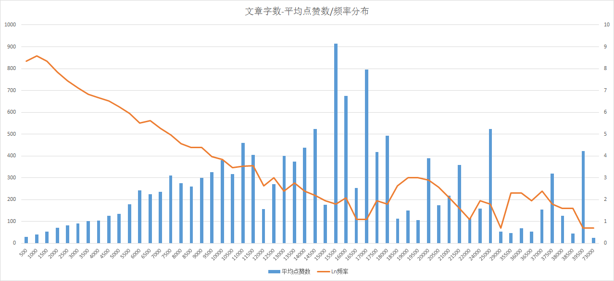

好奇心数据分析
1. 好奇心日报数据抓取
可行性分析
1. 网站做的比较简陋，里面的文章全部是从1~XXXX.html的格式存储的。另外，每篇文章标题，作者，文章内容，点赞数这些信息全部都集中在一个页面，用正则可以一次性匹配。
2. 经过测试，网站并没有对单个IP的访问量进行限制，因此在爬数据时可以像科多兽驯兽师一样（让我们跑起来！）。
3. 对用户登录与评论提交进行简单的注入测试，没有SQL注入漏洞。没有渠道获得后台文章提交地址，因此无法对这一块进行测试。
4. 评论系统与文章展示是两个模块，如果爬取评论数据，需要执行js触发评论加载，人肉看了一下评论内容有很多机器贴，这里嫌麻烦就不爬了。
5. 总结，无法通过后台数据库提取所有数据，可以通过展现的界面最大限度上获取作者，文章标题,内容，点赞数 ，引用图片这几个维度的数据 。
爬虫及数据抽取代码
包括异步，网页解析，以及模块化功能在内的代码一共70行。如果单纯写成脚本的话大概只要40行左右。考虑到大家没有安装对应mongo或mysql数据库，直接以json的形式保存至本地，为了保证存取性能，可自行进行单位文件大小配置。
截止代码完成时共有29000篇文章，结果为json格式。具体修改爬取模式方法见注释，代码如下：1
2
3
4
5
6
7
8
9
10
11
12
13
14
15
16
17
18
19
20
21
22
23
24
25
26
27
28
29
30
31
32
33
34
35
36
37
38
39
40
41
42
43
44
45
46
47
48
49
50
51
52
53
54
55
56
57
58
59
60
61
62
63
64
65
66
67
68
69
70
71
72
73import asyncio
import aiohttp
import pyodbc
import re
import time
def get_page(url,postdata=None):
if postdata == None:
response = yield from aiohttp.request('GET', url)
else:
response = yield from aiohttp.request('POST', url,data=postdata)
return(yield from response.text(encoding='utf-8'))
def catchPage(page):
global reList
reObject={}
url='http://www.qdaily.com/articles/'+str(page)+'.html'
sem = asyncio.Semaphore(50) #50次访问异步执行#
with (yield from sem):
content = yield from get_page(url)
try:
head = regex('<title>(.*?)<',content)[0].replace(' ','')
if '(500)' in head or '(404)' in head:
return
title = head[0:head.find("_")]
sType = head[head.find("_")+1:].replace('_好奇心日报（QDaily）','')
author = regex('span class="name">(.*?)<',content)[0]
detail = regex('"detail">(.*?)class="article-detail-ft"',content)[0]
time = ''
try:
time = regex('<span class="date">(.*?)</span',content)[0]
except:
pass
try:
num = regex('"num ">(.*?)</span',content)[0]
except:
num = regex('num hidden">(.*?)</span',content)[0]
reObject['title'] = title
reObject['sType'] = sType
reObject['author'] = author
reObject['time'] = time
reObject['num'] = num
reObject['detail'] = detail.replace('"','').replace("'",'').replace('\n','').replace('\t','').replace('\r','').replace('<p>','').replace('</p>','').replace(' ','').replace(' ','')
reObject['imgNum'] = str(detail.count('img src='))
reList.append(reObject)
except:
return
def regex(pattern,content):
regex = re.compile(pattern,re.S)
resultList = re.findall(regex,content)
return resultList
def main(sPage,ePage):
loop = asyncio.get_event_loop()
f = asyncio.wait([catchPage(page) for page in range(sPage,ePage)])
loop.run_until_complete(f)
def execute(start,sp):
global reList
for i in range(start,29000,sp): #29000为最终文章名，根据需要更改#
reList=[]
filename = str(i)+"_"+str(i+sp-1)+".json"
try:
main(i,i+sp)
f=open(filename,'w',encoding='utf-8')
f.write(str(reList).replace("'",'"'))
print(filename+"--success!")
f.close()
except:
print(filename+"--failure!")
start = input('start:')
sp = input('jiange:')
execute(int(start),int(sp)) #sp为单位文件存储文章数量，若要一个文件存储200篇则传入200#
有了数据之后就能够进行分析了。简单的就将json转为csv格式，通过excel进行各种数据清洗操作。复杂情况下可以利用numpy及pandas进行快速数据处理。这里仅展示用pandas实现不同文章字数区间对应的平均点赞数清洗功能。代码如下：1
2
3
4
5
6
7
8
9
10
11
12import pandas as pd
import numpy as np
likeNum=data['likeNum']
count = data['count']
f=open('count_likeNum.csv','w',encoding='utf-8')
for cNum in range(500,150000,500): #字数在500-15000之间，500个字数增长间隔#
eNum = cNum+500
countData = data[count>cNum]
cCount = countData[countData['count']<eNum]['likeNum']
if len(cCount) >=2:
f.write(str(cNum)+","+str(cCount.sum())+","+str(cCount.mean())+","+str(len(cCount))+'\n')
f.close()
2.好奇心数据分析展示





结论
- 虽然没有一个衡量新媒体质量的标准体系，但在我这里满分十分的话好奇心5分，也可能是因为我对时尚小资这些东西没什么兴趣。
- 亚文化是一个很大的方向，下次可以做一个公路商店的分析报告。
- 什么时候可以让饥饿不再是一个看心情发文章的地方…已经不太好意思推公众号了(StarvingTime,一个没有重点没人经营的烂号)